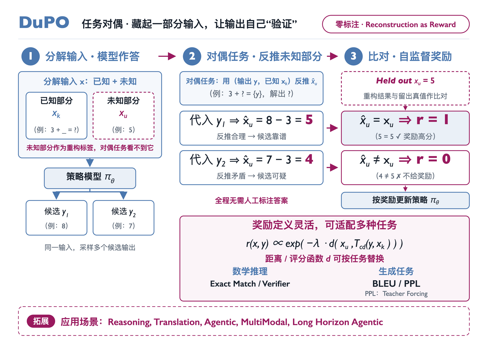
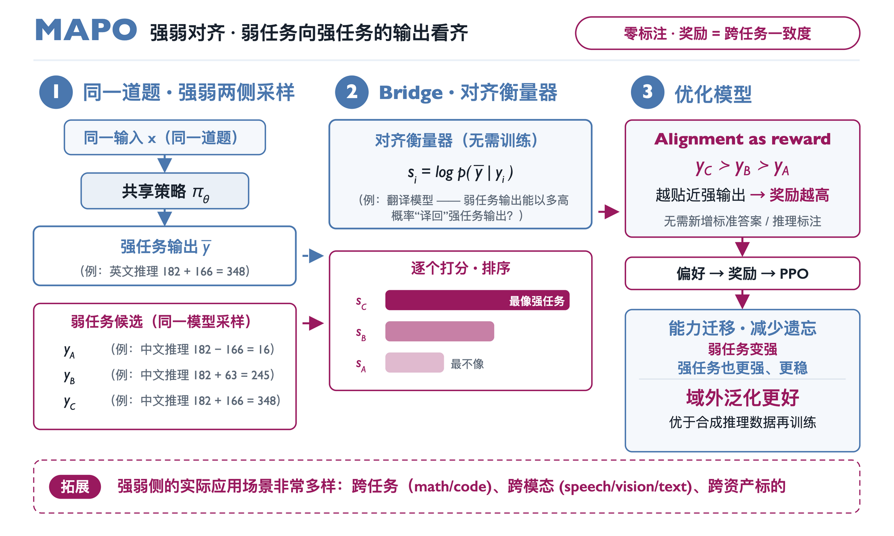
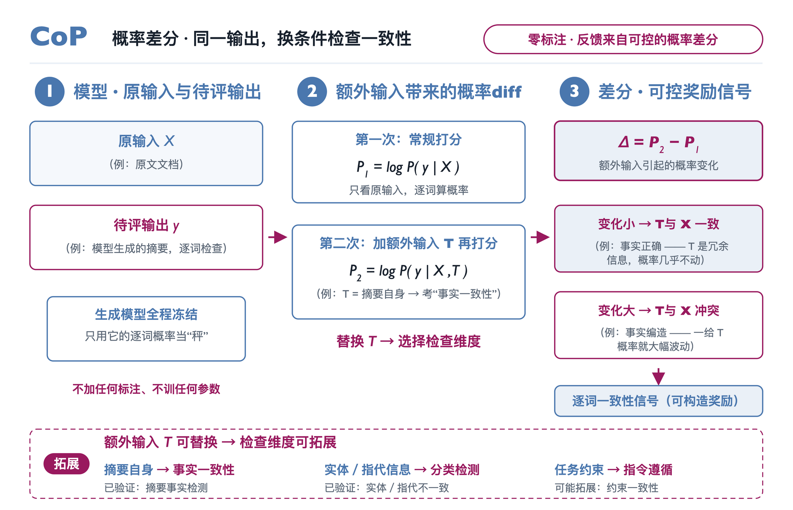

30 秒总览：没有标准答案，不等于没有参照
人工反馈、模型评审和可验证奖励，都要求有人或更强的模型事先知道“什么是对的”。但许多任务即使没有标准答案，结构里也藏着参照：输入的一部分、同一模型在强项上的输出、原文本身。只要错误的输出和参照对不上，就能据此给出奖励。我们的三项工作分别利用了三种结构：
藏起一部分输入，让输出把它找回来
输出若正确，就能和已知部分一起，反推出被藏起的部分。
Qwen3-4B 数学竞赛平均 +6.4弱项向强项看齐
用同一模型在强任务上的输出，为它在弱任务上的输出打分。
域外测试 +16.2（m-RFT +7.5）同一输出，换个条件再打一次分
加入额外信息后概率变化越大，内容越可能没有原文支持。
零样本 F1 63.72（直接用概率 59.25）DuPO：藏起一部分输入，让输出把它找回来
对偶学习用翻译与回译这类互逆任务互相检查：好译文应当能译回原文。但多数任务不可逆——只看答案 8，无法知道原题是 3 + 5 还是 10 − 2。DuPO 因此只要求还原输入的一部分：把输入拆成已知部分 \(x_k\) 和留出的未知部分 \(x_u\)，用输出 \(y\) 和 \(x_k\) 反推 \(x_u\)，再与留出值比较。

- 拆分与作答题目 3 + 5 中，“3 + _”是已知部分，5 被留出。模型看到完整题目，采样出候选 8 和 7。
- 构造对偶题模板“3 + ? = {y}”里没有 5。代入 8，解出 ? = 5；代入 7，解出 ? = 4。
- 比对给奖励5 与留出值一致，奖励为 1；4 不一致，奖励为 0。模型按奖励更新。
写成一般形式：
其中 \(T_{cd}\) 是只反推 \(x_u\) 的对偶任务，\(d\) 是衡量反推结果与留出值差距的距离或评分函数，可以按任务替换：数学用精确匹配或验证器，翻译用回译 BLEU，开放生成还可以用留出真值的 teacher-forcing 困惑度（这一项论文没有做实验）。
为什么可靠：错误答案会把被藏起的量推到错误的值上。已知部分提供锚点，把“由答案还原整道题”缩小成约束充分的反推，降低了对偶任务的难度。
- Qwen3-4B 在 AMC23、AIME24、AIME25 上的平均准确率从 77.2% 提高到 83.6%，其中 AIME24 从 70.0% 提高到 83.3%。
- Seed-X-7B 覆盖 28 种语言、756 个翻译方向，COMET 从 86.96 提高到 89.09；在这项评测的 BLEU、COMET、BLEURT 三项指标上均超过 Qwen3-235B-A22B。
- 不训练、只在推理时用它重排候选，Qwen3-4B 在 AIME24/25 上的平均准确率从 68.4% 提高到 77.7%。
细节与边界：对偶题怎样自动生成，长文翻译怎样防止奖励被钻空子
- 自动生成。程序把题目里的一个数字换成变量（跳过下标、不等式约束等位置），套用“已知答案为 {answer}，求 {variable}”的模板。约 32 万道原题派生出约 106 万道对偶题。
- 筛选。同一道题的候选里，必须至少一个、至多一个能把变量反推正确，奖励才能区分候选。去掉这一步，1.5B 与 4B 模型的平均准确率分别下降 3.6 和 5.4 点。
- 真实案例。一道几何题（外接圆半径 13、内切圆半径 6，答案 468）分别藏起 13 和 6。候选 468 的反推正确率为 69.1%，错误候选 108 和 312 为 0%。反推本身也有噪声，正确答案并不是每次都能反推成功。
- 长文翻译（LongDu，ACL 2026）。整篇文档时 \(x_k\) 为空，直接奖励回译相似度会被钻空子：抄写原文、夹杂源语言，都能让回译更像原文。LongDu 按窗口检测语言，不属于目标语言的片段超过 5% 就直接给 −1，再加流畅度约束。只用 0.5K–2K token 的单语文档训练，Qwen3-4B-Instruct 的平均 BLEU 从 49.21 提高到 55.10，在训练长度之外的 8K–16K 文档上同样有提升。为检验信息是否在翻译中丢失，LongDu 让固定的问答模型基于“翻译再译回”的文档回答原文的问题，答错的比例从 2.18% 降到 1.03%。
- 边界。论文验证了数学推理与翻译，模型规模为 1.5B–8B。开放式写作等任务尚未验证，对偶题筛选也要额外花算力。
MAPO：让弱项向同一模型的强项看齐
同一个模型在相关任务上的能力往往不均衡。MAPO 让强任务提供参照、弱任务接受优化：用模型在强任务上的输出，奖励它在弱任务上与之对齐的输出。论文用多语言数学推理验证这一点：训练数据以英文为主，模型用英文解题明显强于用孟加拉语、泰语或斯瓦希里语。

- 两侧采样对同一道题，同一个模型用英文写一条推理 \(\bar{y}\)，再用弱势语言写多条候选 \(y_A, y_B, y_C\)。
- 对齐打分冻结的翻译模型计算 \(s_i=\log P(\bar{y}\mid y_i)\)，即英文推理有多像候选 \(y_i\) 的译文。
- 对齐即奖励按 \(s_i\) 排序得到偏好 \(y_C\succ y_B\succ y_A\)，用 DPO 训练；也可以把 \(s_i\) 直接作为 PPO 的奖励。
论文里的例子：182 名学生建议加土豆泥，建议加培根的比他们多 166 人，问建议培根的有多少人。英文推理写出 182 + 166 = 348。对齐前，中文推理把多少关系读反，写成 182 − 166 = 16；对齐后改为 182 + 166 = 348。
为什么可靠：翻译模型不需要会解题，只需判断两段推理是否在说同一件事。中文推理一旦用了不同的数字或运算，英文推理就很难被看成它的译文。因此一个 6 亿参数的翻译模型，就能为 70 亿、130 亿参数的推理模型打分。
- 弱项变强：在没有参与训练的 MSVAMP 上，从 41.2% 提高到 57.4%（+16.2）；用答案正确性筛选自采样推理再训练的 m-RFT 只提高 7.5。孟加拉语、泰语分别提高 21.1 和 19.3。
- 强项也更强、更稳：偏好数据里没有英文，英文准确率仍在 MSVAMP 上从 46.4% 提高到 58.4%。在原监督微调数据所在的 MGSM 上，m-RFT 平均下降 5.1，MAPO 提高 2.1。
论文：MAPO（ACL 2024） · 代码
细节与边界：为什么不直接翻译训练数据，对齐又有哪些局限
- 翻译数据的局限。把英文推理翻译成其他语言再做监督微调，数学推理难译、易错，规模有限；模型学到的又是这批数据的特定写法，换一个测试集就容易失效。MAPO 不给“正确答案”，只告诉模型哪类输出更好，作者认为这是它泛化更好的原因。
- 衡量器可以替换。论文默认用 NLLB-200-distilled-600M；换成 mBART、M2M 或更大的 NLLB，提升依然成立。
- 对齐不等于正确。英文参照由模型自己生成。参照出错，或两种语言犯同一个错误时，对齐分数会奖励错误。
- 英文并非处处提升。MathOctopus-7B 在 MGSM 上的英文准确率从 52.0% 降到 45.6%（m-RFT 为 43.2%）。
- 前提。模型需要先具备初步的多语言推理能力；论文只在 7B、13B 模型的多语言数学推理上做了验证。
CoP：同一输出，换一个条件再打一次分
摘要模型常写出流畅却与原文不符的句子。直接用生成概率检测并不可靠：概率既反映原文是否支持这句话，也反映模型的语言与知识先验，流畅的编造照样能拿高分。CoP 让同一个冻结的模型对同一份摘要打两次分，用差值抵消先验。

- 常规打分只给原文 \(X\)，逐词计算摘要的对数概率 \(P_1=\log P(y\mid X)\)。
- 加条件再打分给原文加上额外输入 \(T\)（基础版本中就是摘要本身），再算一次 \(P_2=\log P(y\mid X,T)\)。
- 作差\(\Delta=P_2-P_1\)。\(\Delta\) 越大，这个词越可能没有原文支持。
为什么可靠：原文已经支持的词，\(T\) 只是重复信息，概率几乎不动；原文不支持的词，只有 \(T\) 能解释它，加入后概率明显上升。语言先验在两次打分里都存在，作差后大体抵消。
\(T\) 决定检查什么：在摘要后追加从摘要中抽出的实体列表，检测更侧重实体错误；加入指代消解的结果，更侧重指代错误。两种做法都不需要训练。
- 在 XSum 幻觉标注数据上，零样本逐词检测的 F1 为 63.72，直接用生成概率打分为 59.25。
- 冻结模型、只训练 0.08M 参数的提示向量，用 300 条标注达到 66.56，超过用约 2K 条标注训练的 DAE（65.00）。
论文：CoP（AAAI 2023） · 代码
细节与边界：整句分数、和遮盖原文的方法有何不同、哪些用法尚未验证
- 输出形式。CoP 给每个词一个分数，设阈值即可标出可疑的词，也可以汇总成整句分数。在 QAGS 与 FRANK 的四个整句级数据集上，它与人工判断的相关性都高于 BARTScore 等基线。
- 与遮盖原文的方法相比。此前的 CoCo 遮掉部分原文再打分，但遮盖后的原文本身不通顺，仍受先验干扰，也很难决定该遮哪些词；CoP 加入的是通顺的额外输入。
- 边界。论文研究的是检测与评价，没有把它用作强化学习的奖励。逐词差分能否作为训练奖励或拒答信号，用任务约束检查指令遵循，都还有待验证。
共同配方：把结构变成奖励
三个方法利用的结构不同，做法可以归结为四条：
1. 参照不必是标准答案
留出的输入、强项上的输出、原文本身，都与正确输出存在稳定关系，错误输出会破坏这种关系；而且都不需要新增标注。
2. 检查要比原任务容易
已知部分为反推提供锚点；翻译模型只比较两段推理；两次打分作差抵消先验。检查者不必整体更强，只需在检查的那个维度上可靠。
3. 方向要明确
参照来自更可靠的一侧，被优化的是候选。MAPO 中强任务给参照、弱任务被优化；DuPO 的留出值只用于比对，不出现在对偶题里。
4. 用独立指标验收
奖励上升不等于模型变好，模型可能钻空子。三项工作都在训练奖励之外验证：未参与训练的测试集、往返翻译后的问答测试、人工标注。
和自进化的关系：DuPO 与 LongDu 中，作答和反推由同一个模型完成；MAPO 的参照也来自模型自己。模型变强后，参照和检查也可能随之变强，训练因此有机会随模型一起推进，而不受限于一个固定的外部评审。代价是生成者和检查者可能共享盲点，这是下面的开放问题之一。
下一步：从已验证的实例到可能的拓展
每个方法都有一个可以替换的部件，换掉它就能迁移到新任务：
已验证数学推理、翻译、长文翻译。
可能拓展代码（藏起需求中的一个参数）、Agent 与长程任务（藏起目标或状态的一部分）、多模态。
已验证英文推理带动其他语言的推理。
可能拓展跨任务（数学 → 代码）、跨模态（文本 → 语音、视觉）、跨资产标的；关键是找到可靠的对齐衡量器。
已验证摘要本身、实体与指代信息。
可能拓展用任务约束检查指令遵循；把逐词差分用作训练奖励。
开放问题
- 自动发现结构：哪些输入值得留出、哪些任务之间存在稳定的强弱关系，目前靠人工设计。能否让模型自己提出并筛选？
- 共同盲点：生成者和检查者同源时，怎样发现两者一起犯的错？
- 验证算力怎么花：反推、回译和多次打分都要算力，能否集中到最可能改变候选排序的地方？
如果你在别的任务里也找到了可用的结构，欢迎交流。
论文、代码与数字口径
- DuPO: Enabling Reliable Self-Verification via Dual Preference Optimization. ICLR 2026. arXiv · OpenReview
- MAPO: Advancing Multilingual Reasoning through Multilingual-Alignment-as-Preference Optimization. ACL 2024. 论文 · 代码
- CoP: Factual Inconsistency Detection by Controlling the Preference. AAAI 2023. 论文 · arXiv · 代码
- LongDu: Improving Long-Context Translation via Self-Supervised Dual Learning. ACL 2026. 论文
文中数字均为论文报告值，未独立复现。DuPO 的数字取自 arXiv v1，正式版的基准组合与小数位可能略有不同。图 1–3 是示意图，3 + 5 与图中的中文候选是简化例子，182 / 166 与几何题来自论文案例。图中的“零标注”指不新增答案、推理或偏好标注，不是不需要训练数据：例如 MAPO 的基础模型已经做过多语言推理的监督微调，CoP 用的是在摘要数据上训练过的模型。